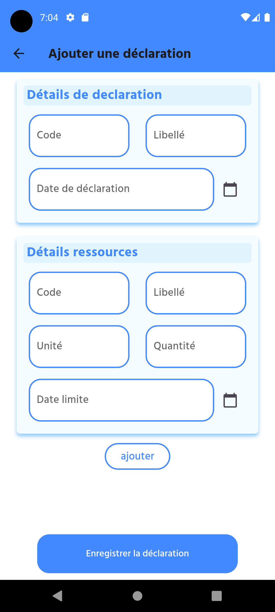
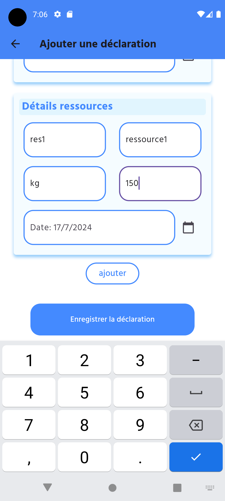
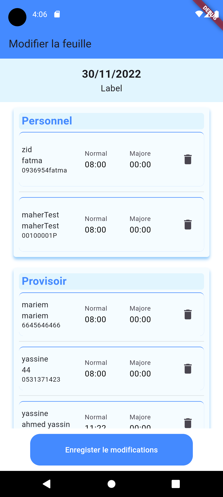

Stage PFE
Entreprise
KMF Business Solutions [1] est a été créée en février 2009 sous la forme d’une SARL, cette société de services informatiques dédiée à l'ingénierie logicielle et à l'intégration de solutions métier ERP dans le secteur du BTP. Son expertise repose sur la conception et l'implémentation de solutions informatiques personnalisées pour aider les entreprises du BTP à optimiser leurs processus opérationnels.
Projet
Le projet a pour objectif de créer une application mobile qui facilite le suivi des activités sur le chantier. Le suivi du pointage des ressources humaines et des matériaux est crucial pour chaque projet
|  |  |  |